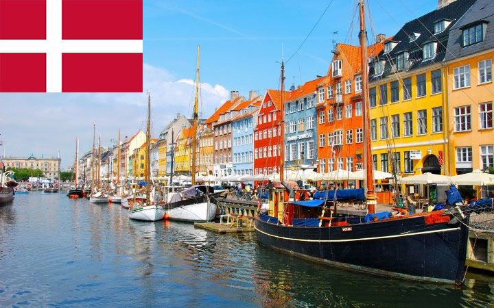

관광명소 :
언어: 덴마크어
기온: 가장 추운 1월의 전국 각지의 평균기온은 －1.5℃이고,
가장 더운 7월의 전국 평균기온은 17℃이다 .
국호: 덴마크 왕국(Kongeriget Danmark)
면적: 덴마크 본토 43,094㎢ 덴마크 왕국[1] 2,220,093 km²[2]
인구: 5,748,311명 (2018년)
수도: 쾨벤하운(København)(코펜하겐(Copenhagen))
정치체제: 입헌군주제, 단일국가, 의원 내각제
화폐단위: 덴마크 크로네
환율: 1000KRW = 약 5.6DKK